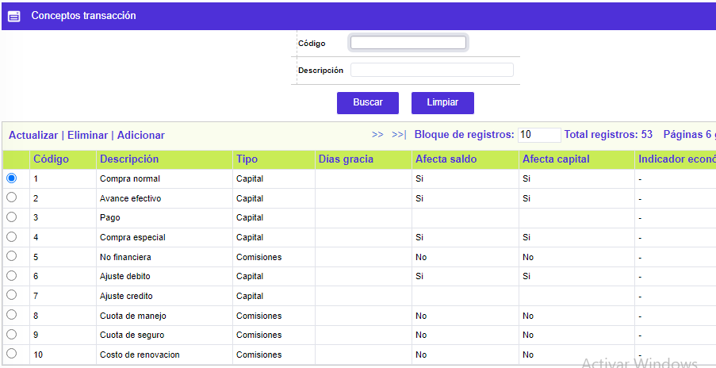

Conceptos transacción
Mediante esta opción reservada a funcionarios de OpenCard S. A. se facilita la consulta y/o mantenimiento de la tabla en la que se parametrizan características asociadas a los conceptos de las transacciones, acordes con el tipo de cada uno de éstos.

El formulario contiene las opciones Actualizar, Eliminar y Adicionar.
Adicionar: Si el usuario invoca la opción Adicionar se despliega un nuevo formulario
Descripción de campos
Código |
Campo numérico de 3 dígitos, obligatorio, en el que se registra el código asociado a cada uno de los conceptos de transacción, utilizados entre otros, al definir las Transacciones por empresa Crédito y Debito, Orígenes de transacciones , entre otras. |
Descripción |
En este campo alfanumérico de 30 dígitos, obligatorio, se registra el nombre asociado a cada uno de los códigos de los conceptos de transacción. |
Tipo |
Campo obligatorio que posee un combo donde se selecciona entre Capital, Interés o Comisiones, el tipo o clase de concepto válido para cada item a parametrizar. |
Días gracia |
En este campo numérico de 3 dígitos, no obligatorio, se ingresa el número de días de gracia; cuando ese valor es mayor a cero significa que si dentro de ese lapso de tiempo ingresa una transacción correspondiente a ese concepto, sobre esta transacción no será liquidado ningún tipo de cargo financiero. |
Afecta saldo |
Campo tipo combo en el que se indica Si o No las transacciones con ese concepto que ingresen, afectan el valor del saldo de la tarjeta , que se puede consultar desde la opción detalle de la consulta de la tarjeta. |
Afecta capital |
Este campo contiene un combo donde se puede seleccionar Si o No las transacciones con ese concepto, al no ser cubiertas por el pago mínimo, pasan a conformar o incrementar el saldo del capital en mora. |
Indicador económico |
Campo que posee lista de valores de la cual la entidad selecciona el Indicador económico que será utilizado para liquidar los cargos financieros a que haya lugar. |
Actualizar: Si el usuario invoca la opción Actualizar se despliega un nuevo formulario en el cual los campos modificables son Descripción, Tipo, Días gracia, Afecta saldo, Afecta capital e Indicador enocómico.